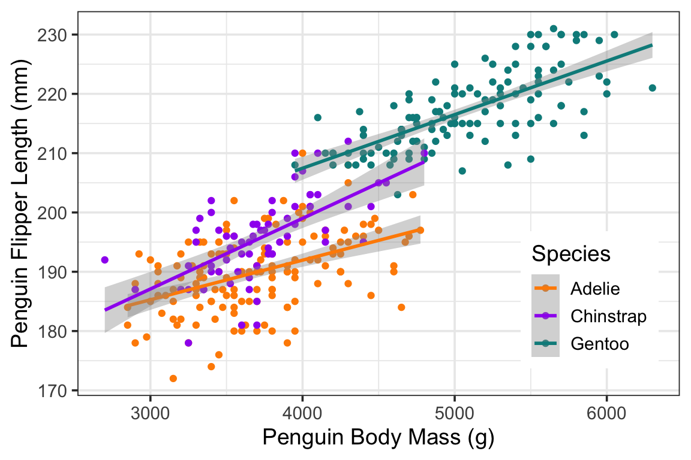

Instructor: Jarrett Byrnes, PhD.
Email: jarrett.byrnes@umb.edu
Weekly Schedule: Tuesday & Thursday 11-12:30, Lab Thursday 12:30-3
Office Hours: Prof. Byrnes will hold office hours Tuesday from 1:30-3 and Wednesday 11-12:30.
Source for this Website: https://github.com/biol607/biol607.github.io/
10/27/2016 Midterm exam is out
9/19/16 Hadley Wickham special session on quora
9/16/16 For a one-stop-shop for the tidyverse, there’s now a package that will load it all.
9/8/16 New issue of The R Journal
9/7/16 Check out Interview with a Data Sucker
9/6/16 Sticky notes are available at the bookstore in Desk Supplies section. Walk in, and go straight to the back.
9/5/16 Welcome to the class! Please browse around the site or download the syllabus!